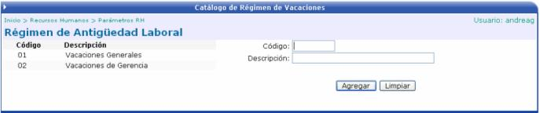

Aquí se clasificarán los diferentes tipos de vacaciones, dependiendo de los años laborados en la empresa. Primero se debe de crear un código y una descripción para reconocer dicha agrupación:

Una vez creada, se debe de agregar el detalle donde se debe se especificar cierta información:
Años Laborados: número de años que el empleado ha trabajado en la empresa.
Días de Vacaciones: número de días que el empleado tiene derecho a vacaciones, según los años laborados.
Días de Adicionales: cantidad de días adicionales de vacaciones que tiene un empleado, según la cantidad de años laborados en la empresa.
Días de Compensación: número de días que el empleado puede cobrar al patrón, dependiendo de la antigüedad que tenga en la empresa y de las políticas de la misma.
Días de Verificación de Compensación: es la cantidad de días de verificación en la que no se podrá hacer más de una acción de personal de vacaciones en ese rango a un mismo empleado de la empresa. Por ejemplo si en éste campo se pone 365 días, solo se podrá hacer una acción al año a un mismo empleado que compense vacaciones. Mientras que si se pone 60 días en éste campo y se hace una acción con fechas del 01/03/2006 al 15/03/2006 para el empleado “X”, lo que quiere decir es que no le permitirá al usuario hacer una acción igual para el empleado “X” durante los 60 días después de la fecha hasta (15/03/2006), o sea podrá hacer una igual hasta el 15/05/2006.
Días de Enfermedad: número de días que el empleado tiene “derecho” a enfermarse, sin que se los rebajen del salario.
 Borra la línea de detalle Modifica la línea de detalle.
Borra la línea de detalle Modifica la línea de detalle.